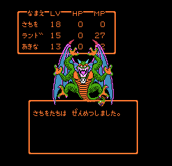

「COBOLを使っている人がまだいるなんて……」――JPA代表理事 @lestrratさん
@INCはいい感じになります)
ドラクエ2 FC版を今更やる part.8 ～ハーゴン＆シドー戦～ © cori95.net
//P[% job_name %][% test_phase %] JOB [% group_code %],[% tso_name %],TIME=(,10),CLASS=J,MSGCLASS=S,REGION=4096K,
// NOTIFY=&SYSUID
//*=====================================================================
//* BMUD: INTEGRATION TEST (2) - IT DRIVER (BMUD PACKAGE)
//*---------------------------------------------------------------------
[%~ PROCESS _header.jcl -%][%~ FOREACH branch = branches %]
//NEXTJ EXEC NEXTK,LIB=&THIS.,JOB=&BASENAME.[% branch %]
[%~ END -%][%~ SWITCH development_period -%]
[%~ CASE '08' -%]
//LINKGO EXEC DBLGK,PSB=PVVBMUZ1,MODE=Z,
// KLIB1=A054, <= 08 BMUD
[%~ CASE '09' -%]
//LINKGO EXEC DBLGK,PSB=PVVBMUZ1,MODE=Z,VER=V2,
// KLIB1=B005, <= 09 BMUD
// KLIB2=B008, <= 09 商品管理
// KLIB3=B004, <= 09 指定日編集
[%~ CASE '10' -%]
//LINKGO EXEC GBLGK,PSB=PVVBMUZ1,MODE=Z,VER=V3,
// KLIB1=H015, <= 10 BMUD
// KLIB2=H014, <= 10 商品管理
// KLIB3=B004, <= 09 指定日編集（10年度も09を見る）
// KLIB4=B005, <= 09 BMUD
[%~ END -%]get前にcwd が必要| Internal Reader | Mainframe Connector | |
|---|---|---|
| 概要 | INTRDRという擬似的なファイルへ、JCLをFTPでputする |
MFCに特定のプロトコルで会話する (JCLの送付など) |
| 認証 (authentication) | ○ (FTPアカウント = TSOアカウント) | ○ |
| 認可 (authorization) | ？ | RACF (IBM Resource Access Control Facility)により可能 |
| 同期処理 | ×？ | ○ |
| 戻り値 | ジョブIDのみ | ジョブログ |
| 由来 | MVS標準 | IBM CrossWorlds (ビジネスプロセス統合ミドルウェア製品群) |
この辺り、深くは分かりかねます(ごめんなさい)
男心と女心: とにかく結論を © 織田隼人
{kind=link}